Tiramisu au chocolat
Aujourd’hui je vous retrouve avec une recette particulièrement gourmande : le tiramisu au chocolat (sans café donc!)
Le tiramisu c’est un peu le péché mignon de tout le monde si je ne me trompe pas (je ne peux pas croire ceux qui me diront ne pas aimer ça, venez chez moi et on en reparle^^)! Moi je raffole de la simple crème au mascarpone, c’est pour dire! Vous ne le savez peut-être pas mais je ne suis pas une consommatrice de café (du thé , seulement du thé (et des chocolats chauds aussi)!). Je ne dis pas non à un tiramisu au café mais mon préféré reste tout de même celui au chocolat, sans café, avec une bonne crème au mascarpone comme je les aime (et une sauce au chocolat dont vous me direz des nouvelles). Pour cette recette, j’ai utilisé les boudoirs de la marque Bonneterre et j’aurai aussi pu utiliser leur chocolat car j’en raffole (vraiment beaucoup trop)!! Rien ne vous empêche évidemment de faire vous-même vos biscuits cuillères si vous avez du temps devant vous, c’est vous qui voyez. Cette recette de tiramisu au chocolat n’a rien de bien compliqué, le plus difficile reste sans conteste le temps d’attente!!! Au moins 3 HEURES de repos pour que la crème devienne plus ferme et ça c’est juste de la torture (heureusement il y a les casseroles à lécher, le saladier et quelques boudoirs à croquer en attendant)! Cet inconvénient peut aussi être perçu comme un avantage car ça vous permet de vous organiser et de faire cette recette la vieille (la nuit vous dormirez et ne penserez pas à vos tiramisus qui attendent d’être mangés). Ici, j’ai décidé de les faire dans de grandes verrines (il y a donc 4) mais vous pouvez également en faire 6 dans des plus petits contenants voir 8 dans des mini-verrines (tout dépend finalement du repas que vous avez prévu en amont car on ne va pas se le cacher: un tiramisu ce n’est pas ce qu’il y a de plus léger). Je vous laisse à présent découvrir la recette de ce tiramisu au chocolat, n’hésitez pas à partager avec moi votre expérience si jamais vous tentez cette recette, c’est toujours un plaisir de recevoir et de lire vos petits mots doux ♥ Je vous dis à très vite et vous souhaite de passer une belle journée!
Enregistrer
Enregistrer
Ingrédients
- Mascarpone - 375g
- Oeufs - 3
- Sucre - 100g
- Cassonade - 15g
- Lait (de coco pour moi mais n'importe quel lait animal ou végétal fera l'affaire) - 50ml
- Cacao en poudre (non sucré de préférence plutôt choisir un cacao type van houten à 70% de cacao) - 1 càs
- Chocolat noir en morceaux - 50g
- Huile neutre (de coco, de pépins de raisins etc) - 1 càs
- Extrait de vanille - 1 càc
- Eau - 250ml
- Cacao en poudre (non sucré de préférence plutôt choisir un cacao type van houten à 70% de cacao) - 1,5 càs
- Extrait de vanille - 1 càc
- Sucre semoule - 25g
- 1 paquet de boudoirs (la quantité varie selon la taille des verrines utilisées)
Instructions
- Séparer les blancs des jaunes dans deux récipients.
- Mélanger les jaunes avec le sucre
- Battre les jaunes avec le sucre jusqu’à ce que le mélange blanchisse.
- Ajouter le mascarpone au mélange jaunes d’œufs -sucre
- Monter les blancs en neige avec une pincée de sel.
- Une fois que les blancs sont bien fermes, les incorporer délicatement aux jaunes d’œufs/mascarpone en plusieurs fois.
- Une fois que le mélange est homogène, placer au frais pendant le reste de la recette
- Couper le chocolat en morceaux
- Dans une petite casserole, verser le lait de coco, ajouter la cassonade, le cacao et le chocolat préalablement coupé en morceaux.
- Faire fondre le tout sur feu doux en remuant régulièrement
- Une fois obtenu une belle sauce au chocolat, ajouter l’huile et l’extrait de vanille.
- Mélanger afin de bien les incorporer à la préparation.
- Laisser de côté dans la casserole pendant la préparation du reste de la recette.
- Dans une petite casserole, verser l’eau, le cacao en poudre et le sucre.
- Porter à ébullition
- Dès la première ébullition, sortir la casserole du feu et ajouter l’extrait de vanille. Mélanger.
- Poser vos verrines devant vous puis tremper les boudoirs un à un dans cette préparation.
- Au fur et à mesure, disposer les boudoirs au fond de chaque verrine de manière à ce qu’ils tapissent le fond
- Ajouter de la crème au mascarpone par-dessus puis une fine couche de sauce au chocolat.
- Renouveler l’opération jusqu’à ce que vous arriviez en haut de votre verrine.
- Placer au frais pendant 3 bonnes heures (les fameuses 3 heures d'attente!!!!).
- Au moment de servir, saupoudrer de cacao en poudre (ici j'ai découpé dans du papier des emporte-pièces en forme de cœur et j'ai saupoudré de cacao en poudre au dessus de mon pochoir. Sinon tapisser entièrement le dessus du tiramisu de cacao en poudre)
- Il ne reste plus qu'à déguster ! Bon appétit 🙂
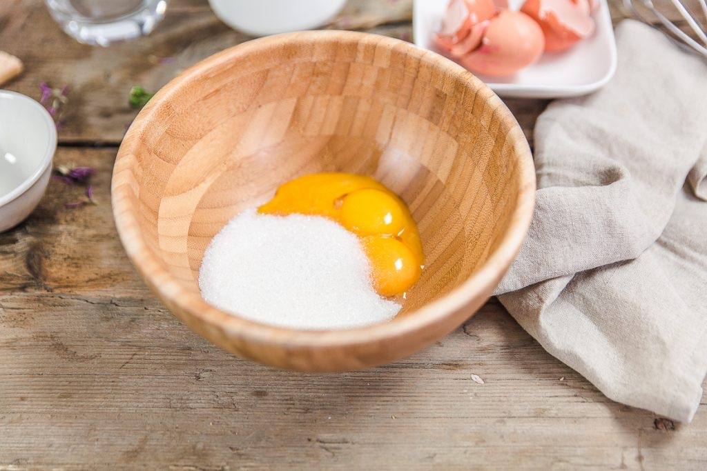
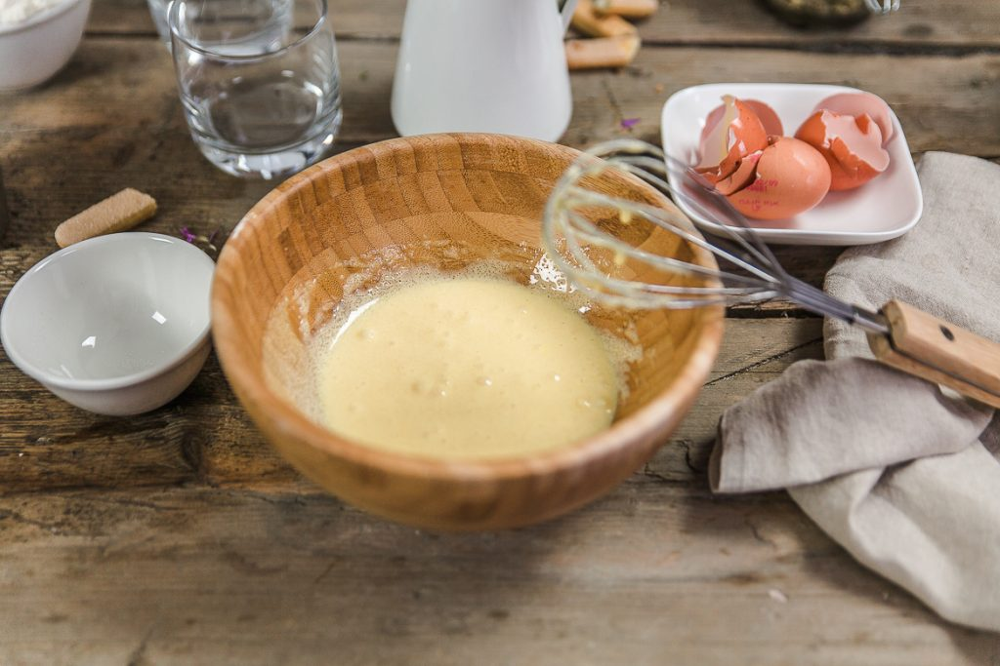
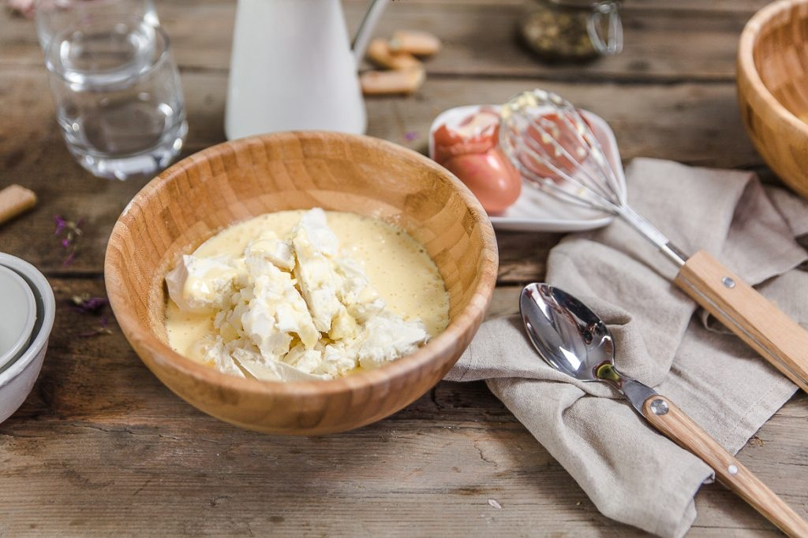
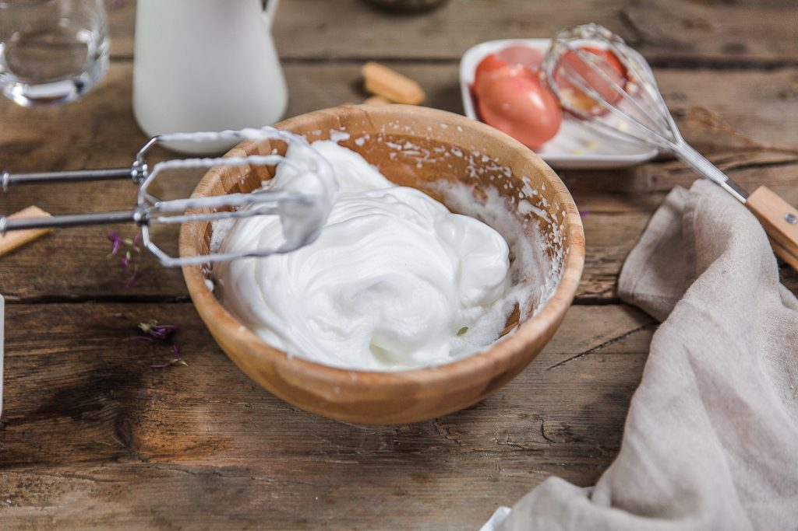
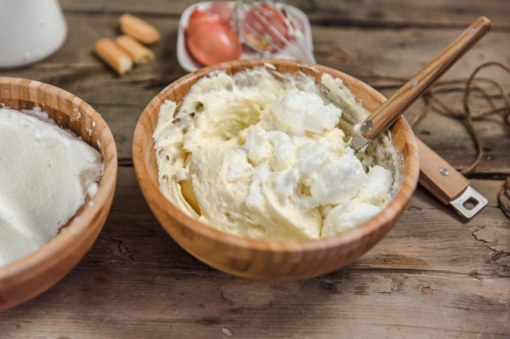
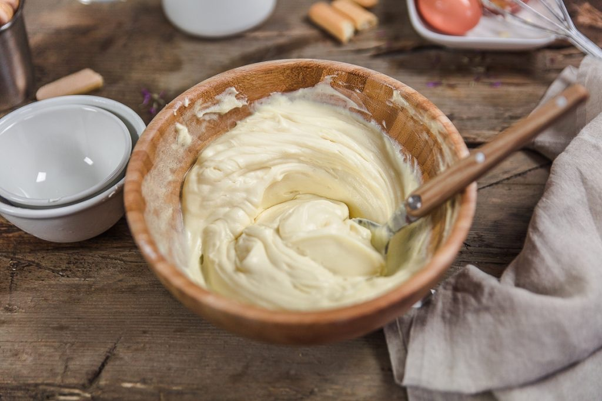
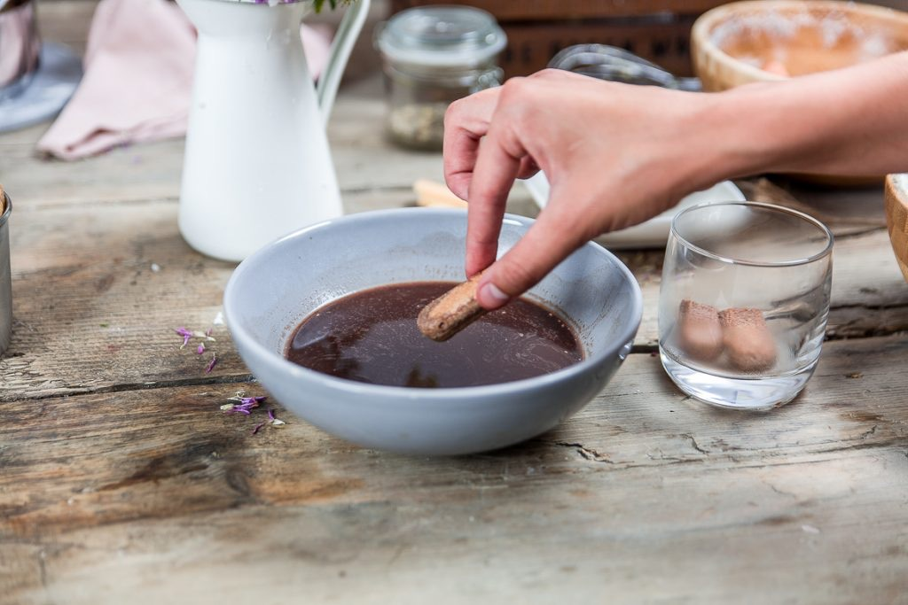
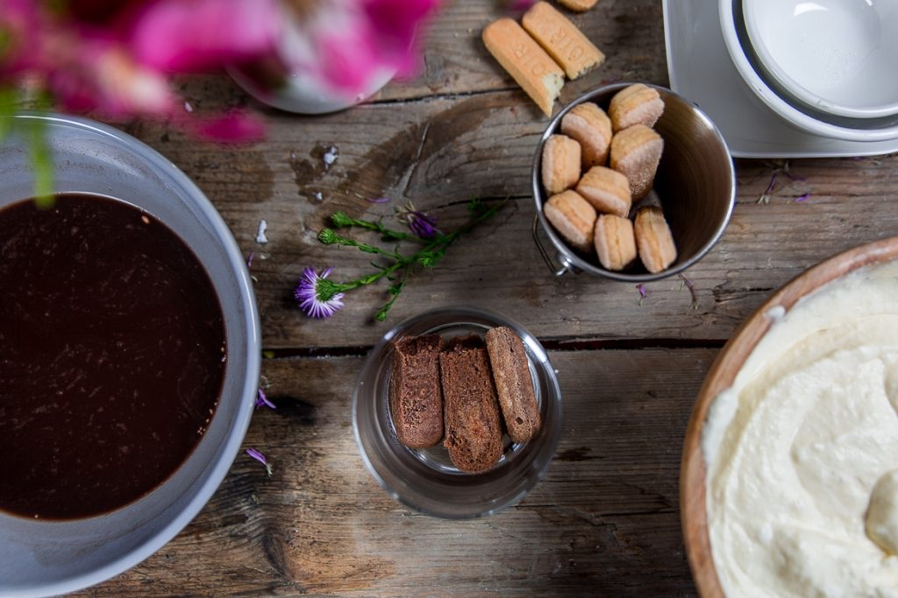
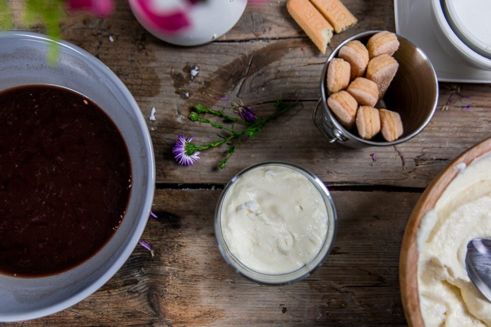
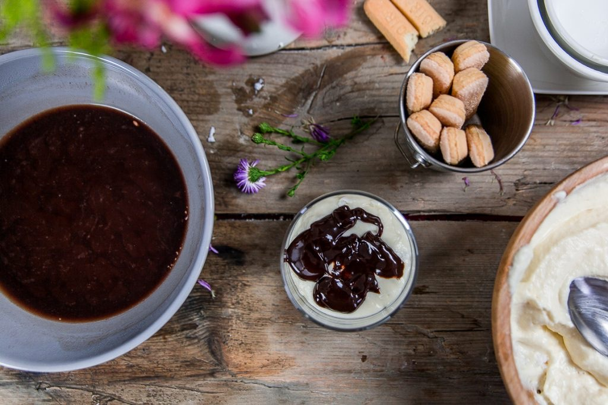
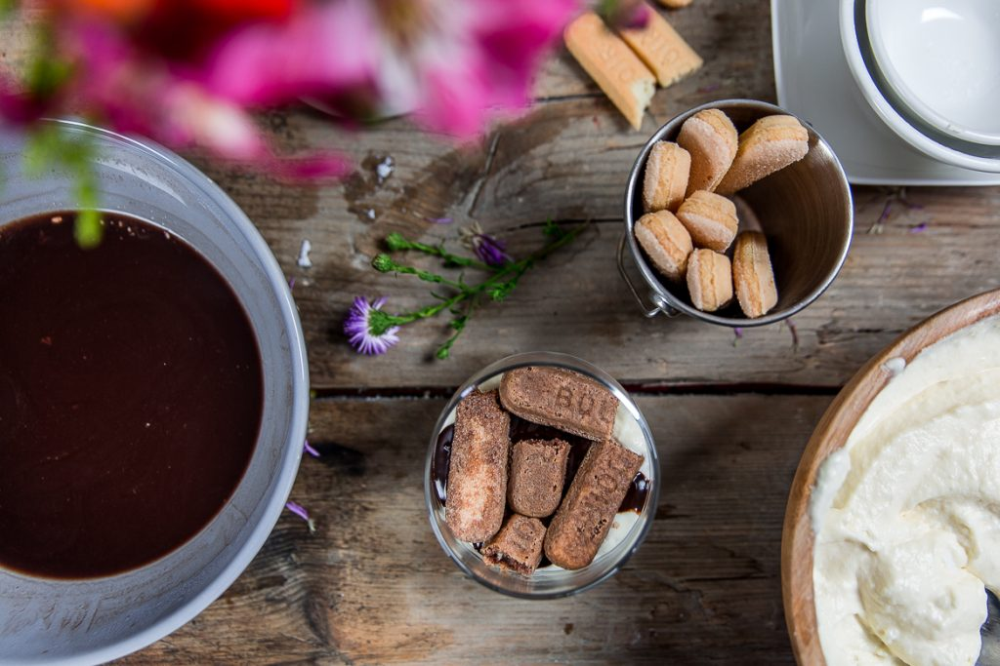
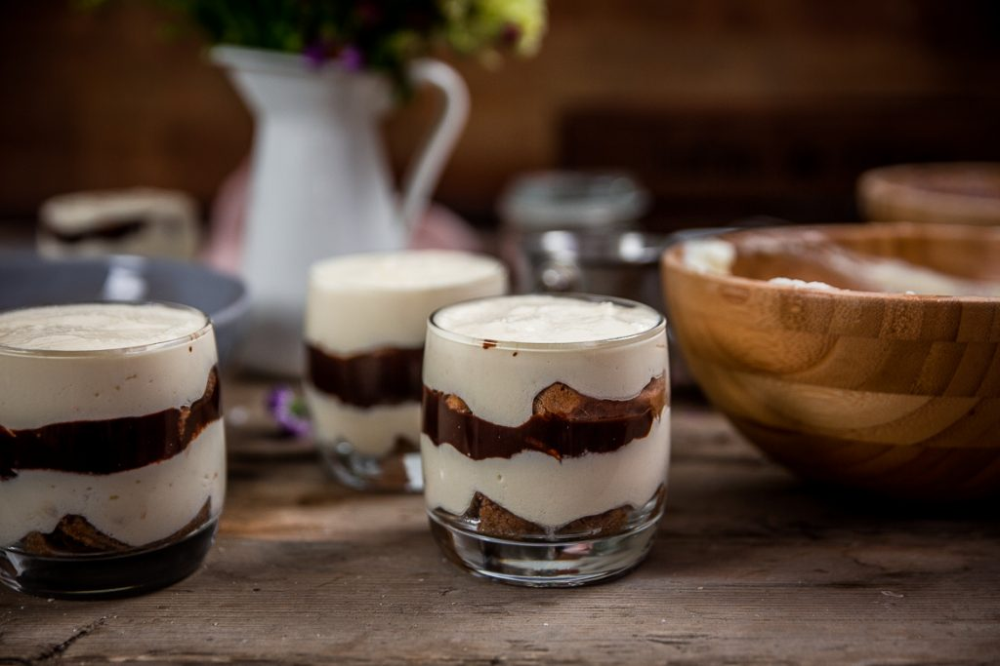
Les tips de la communauté
Recette excellente et simple pour ceux n'aimant pas le café. Très largement testée avec succès écrasant, appréciée par familles et invités. Nombreuses adaptations créatives validées par testeurs.
Astuces
- Lait de coco ne donne pas de goût noix de coco perceptible au chocolat
- Peut remplacer lait de coco par lait de vache ou autre lait végétal
- Facile et rapide à réaliser
- Perfect pour enfants (pas de café)
- Adapter les proportions en doublant pour 15 personnes
Variantes suggérées
- Ajouter du rhum aux biscuits pour trempage
- Utiliser fromage blanc à la place du mascarpone
- Aromatiser à l'orange avec zeste et jus
- Ajouter des petits morceaux de Mars entre couches
- Utiliser lait d'amande
- Faire couches alternées boudoirs et spéculoos
- Utiliser chocolat au lait au lieu du noir
- Utiliser dans un grand plat plutôt que verrines pour plus de portions
Ajustements signalés
- verrines pour tous.. ) savez-vous comment je dois adapter les proportions?